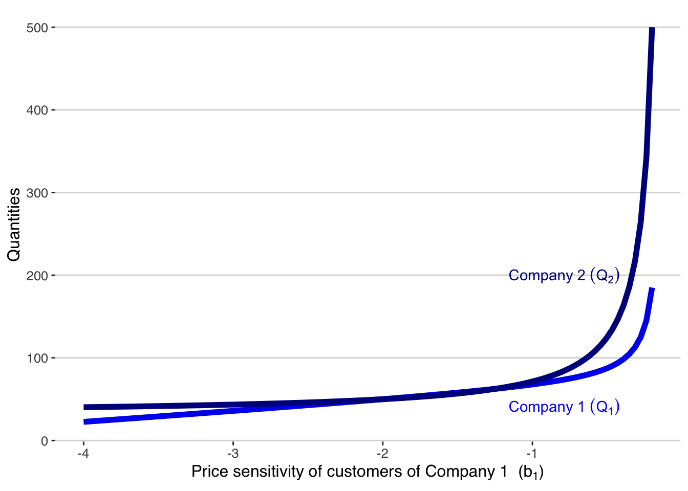

# firm 1
a_1 <- 100
b_1 <- -2
b_12 <- 1
c_1 <- 25
# firm 2
a_2 <- 100
b_2 <- -2
b_21 <- 1
c_2 <- 2512 Competitive Advantage
12.1 Rethinking Market Size: A Shift Towards Profitability Analysis
The Traditional Approach: Market Size Estimates
In both corporate and entrepreneurial settings, market size estimates are traditionally used to gauge the profit potential of investments in innovation. The idea is simple: a larger market size suggests greater profit opportunities if a product gains a certain market share. This method, however, relies heavily on hypothetical scenarios and often overlooks crucial factors like market share attainability and industry entry barriers.
The Limitations of Market Size as a Profit Proxy
Market size, while indicative, isn’t always a reliable proxy for profitability. For example, a sizable market like the cola industry may seem lucrative, but high entry barriers can drastically limit market share for new entrants. Existing measures like Total Addressable Market (TAM),1 Serviceable Available Market (SAM),2 and Target Market,3 though refined, still fall short because they don’t fully account for the dynamics of market entry, especially for market makers who are creating new segments.
A More Direct Approach: Estimating Profitability Through Customer Demand
A more direct and informative approach involves estimating the demand curve specific to the innovation. This method integrates customer pain points with the effectiveness of the proposed solution. A larger target market, better solution efficacy, and greater differentiation from existing products all contribute to higher expected profitability. This approach, grounded in differentiated Bertrand oligopoly models, allows for the calculation of equilibrium prices, quantities, market shares, and profits, providing a more accurate and actionable profitability estimate.
Understanding Profit as a Truer Measure of Market Potential
Revenue vs. Profit: Shifting the Focus
Traditional market size metrics, like total addressable market, often emphasize total sales value. While this offers a sense of the revenue pool, it doesn’t necessarily reflect a company’s profitability. By using demand and profit functions, we can calculate expected revenue as a market size measure but with a crucial distinction - our primary focus is on profit maximization, not just revenue.
Profit: A More Relevant Indicator for Investment Decisions
Investors typically rely on revenue proxies to gauge profit potential. However, actual profit figures provide a more accurate and meaningful measure for investment decisions. As our earlier calculations showed, understanding the profit per company helps in determining the viability of investment and continued operation.
Profit as a Predictor of Long-Term Success
It’s important to note that these profitability estimates reflect a scenario where the product is well-known, resembling its mature market stage. This perspective aligns well with traditional market size metrics but offers a more realistic and actionable forecast for long-term success.
Profitability in Practice: An Illustrative Case
Understanding Demand Curves and Profit Functions
Consider a scenario in a differentiated Bertrand oligopoly involving two companies. Their demand curves and profit functions can be mathematically expressed, leading to reaction functions that help determine optimized equilibrium prices, quantities, and profits. This mathematical approach, while intricate, offers a tangible way to predict market behavior and profitability.
Let’s apply this to a hypothetical situation where two companies with identical costs and differentiation exist in a market. Using specific parameters, we can calculate equilibrium outcomes, providing insights into potential revenues and profits. The demand curves are
\[ \begin{align} \mathsf{Q_1} &= \mathsf{a_1 - b_1\ P_1 + b_{12}\ P_2} \\[6pt] \mathsf{Q_2} &= \mathsf{a_2 - b_2\ P_2 + b_{21}\ P_1} \end{align} \]
where ai is the intercept of Company i, bi is the “own price” slope of Company i, and bij is the “competitor price” slope (the substitution effect of the price of Company j) for the product of Company i.
From these demand curves, we get profit functions for both Companies:
\[ \begin{align} \mathsf{\pi_1} &= \mathsf{(P_1 - c_1)\ Q_1 - f_1} \\[5pt] &= \mathsf{(P_1 - c_1)\ (a_1 - b_1\ P_1 + b_{12}\ P_2) - f_1} \\[15pt] \mathsf{\pi_2} &= \mathsf{(P_2 - c_2)\ (a_2 - b_2\ P_2 + b_{21}\ P_1) - f_2} \end{align} \] where ci is the variable cost per unit of Company i and fi is the fixed cost of Company i.
Maximizing profit generates reaction functions that we solve either iteratively or as a system of equations to find the differentiated Bertrand equilibrium prices, quantities, and profits. Skipping the math, the formula for the optimized equilibrium prices is
\[\begin{align} \mathsf{P_1^*} &= \mathsf{\frac{-2 a_1 b_2 + 2 b_1 b_2 c_1 + a_2 b_{21} - b_2 b_{21} c_2} {4 b_1 b_2 - b_{12} b_{2}}} \\[16pt] \mathsf{P_2^*} &= \mathsf{\frac{-2 a_2 b_1 + 2 b_2 b_1 c_2 + a_1 b_{12} - b_1 b_{12} c_1} {4 b_2 b_1 - b_{21} b_{12}}} \end{align}\]These optimal price formulas allow us to quickly calculate prices, quantities, and profits. Let’s do that for a particular set of parameters. Make two companies that are equally differentiated and have identical costs:
\[ \begin{align} \mathsf{a_1} &= \mathsf{a_2 = 100} \\ \mathsf{b_1} &= \mathsf{b_2 = 2} \\ \mathsf{b_{12}} &= \mathsf{b_{21} = 1} \\ \mathsf{c_1} &= \mathsf{c_2 = 25} \end{align} \]
fP1_star <- function(a1, a2, b1, b2, b12, b21, c1, c2) {(-2*a1*b2 + 2*b1*b2*c1 + a2*b21 - b2*b21*c2) / (4*b1*b2 - b21*b12)}
fP2_star <- function(a1, a2, b1, b2, b12, b21, c1, c2) {(-2*a2*b1 + 2*b2*b1*c2 + a1*b12 - b1*b12*c1) / (4*b2*b1 - b12*b21)}
#
P1_star <- fP1_star(a_1, a_2, b_1, b_2, b_12, b_21, c_1, c_2) # 50
P2_star <- fP2_star(a_1, a_2, b_1, b_2, b_12, b_21, c_1, c_2) # 50fQ1_star <- function(P1, P2) { a_1 + b_1 * P1 + b_12 * P2}
fQ2_star <- function(P1, P2) { a_2 + b_2 * P2 + b_21 * P1}
#
Q1_star <- fQ1_star(P1_star, P2_star) # 50
Q2_star <- fQ2_star(P1_star, P2_star) # 50fPi1_star <- function(P1,P2) { (P1 - c_1) * fQ1_star(P1,P2) }
fPi2_star <- function(P1,P2) { (P2 - c_2) * fQ2_star(P1,P2) }
#
#ggplot() + xlim(0,100) + ylim(0,1250) + geom_function(fun = fPi1_star, args = list(P2 = 50), color = "green4", linewidth = 2)
#
Pi1_star <- fPi1_star(P1_star, P2_star) # 1250
Pi2_star <- fPi2_star(P2_star, P1_star) # 1250With these parameters, we can calculate that the equilibrium outcome is
\[ \begin{align} \mathsf{P_1^*} &= \mathsf{P_2^* = 50} \\[3pt] \mathsf{Q_1^*} &= \mathsf{Q_2^* = 50} \\[3pt] \mathsf{\pi_1^*} &= \mathsf{\pi_2^* = 1250} \end{align} \] ### Revenue as Market Size: Traditional vs. Analytical Perspectives
Traditional View: Total Sales Value as Market Size Indicator
Traditionally, market size metrics like Total Addressable Market focus on the total value of sales in the market. This approach provides an overview of the available revenue pool for companies. It’s a straightforward method to gauge market potential but doesn’t necessarily reflect a company’s true profit potential.
Analytical Shift: Revenue Estimation through Demand and Profit Functions
In contrast, our analytical approach calculates expected revenue using demand and profit functions, offering a more nuanced measure of market size. For instance, at optimal prices, we estimate revenue to be $2500 per company. This method not only quantifies the revenue but also aligns it with strategic pricing and market dynamics.
fR1_star <- function(P1,P2) { fQ1_star(P1,P2) * P1}
fR2_star <- function(P1,P2) { fQ2_star(P1,P2) * P2}
R1_star <- fR1_star(P1_star, P2_star) # 2500
R2_star <- fR2_star(P1_star, P2_star) # 250012.2 Profit as Market Size: A Paradigm Shift
Moving Beyond Revenue to Profit Maximization
While traditional metrics emphasize revenue, our primary goal in entrepreneurial analytics is profit maximization. Investors often rely on revenue figures as rough proxies for profit. However, calculating optimal profit provides a more accurate and actionable measure of a company’s potential. For example, we determined an optimal profit of $1250 per company.
Profit as a Long-term Success Predictor
It’s important to note that these profit estimates are based on a mature market understanding of the product, as if the product is well-established. Early-stage products typically see lower sales, growing as brand awareness and market penetration increase. Thus, profit, in this context, is a projection of the company’s potential as it matures, offering a more strategic perspective compared to traditional revenue-based market size metrics.
Navigating the Growth Path
The transition from initial sales to achieving this profit potential involves significant investment in brand development, production capacity, and market expansion. Balancing pricing strategies with investment in growth is critical. The optimal growth rate should balance these elements, a topic that warrants further exploration to fully understand how competitive advantages impact this trajectory.
12.3 Decoding Competitive Advantages: A Bertrand Model Analysis
Introduction to Competitive Dynamics in Business
In this section, we delve into the intricate world of competitive advantages through the lens of the Bertrand oligopoly model. Our goal is to examine how variations in key parameters—market size, price sensitivity, customer loyalty, and unit variable cost—affect a business’s pricing, market share, and profitability. This analysis will provide entrepreneurs with practical insights into strategic decision-making.
Market Size (a1)
Prices
When Company 1’s target customer segment expands, indicating an increase in market size, how does it affect its pricing strategy compared to its competitor, Company 2? We use the Bertrand model to map these changes:
fP1_a1 <- function(a1){(-2*a1*b_2 + 2*b_1*b_2*c_1 + a_2*b_21 - b_2*b_21*c_2) / (4*b_1*b_2 - b_12*b_21)}
fP2_a1 <- function(a1){(-2*a_2*b_1 + 2*b_2*b_1*c_2 + a1*b_12 - b_1*b_12*c_1) / (4*b_2*b_1 - b_12*b_21)}
ggplot() + xlim(0,200) +
geom_function(fun = fP1_a1, color = "blue2", linewidth = 2) +
geom_function(fun = fP2_a1, color = "blue4", linewidth = 2) +
labs(x = TeX("Market size of Company 1 ($a_1$)"),
y = "Prices of Companies 1 and 2") +
annotate("text", x = 130, y = 67, label = expression(paste(" Company 1 " (P[1]))), color = "blue2") +
annotate("text", x = 180, y = 52, label = expression(paste(" Company 2 " (P[2]))), color = "blue4") +
theme_hc()Key Insight: As Company 1’s market size increases, its optimal pricing strategy changes, potentially allowing it to either increase market share or improve profit margins.
Quantities
Next, we explore how these market size changes impact the quantities sold by both companies:
fQ1_a1 <- function(a1) { a1 + b_1 * fP1_a1(a1) + b_12 * fP2_a1(a1)}
fQ2_a1 <- function(a1) { a_2 + b_2 * fP2_a1(a1) + b_21 * fP1_a1(a1)}
ggplot() + xlim(0,200) +
geom_function(fun = fQ1_a1, color = "blue2", linewidth = 2) +
geom_function(fun = fQ2_a1, color = "blue4", linewidth = 2) +
labs(x = TeX("Market size of Company 1 ($a_1$)"),
y = "Quantities of Companies 1 and 2") +
annotate("text", x = 130, y = 84, label = expression(paste(" Company 1 " (Q[1]))), color = "blue2") +
annotate("text", x = 180, y = 53, label = expression(paste(" Company 2 " (Q[2]))), color = "blue4") +
theme_hc()Strategic Takeaway: An increase in market size typically leads to higher sales volumes, but entrepreneurs must balance this with pricing strategies to ensure optimal profitability.
Margins
Margins are a direct indicator of profitability. Let’s see how changes in market size influence the margins of both companies:
fMargin1_a1 <- function(a1) {fP1_a1(a1) - c_1 }
fMargin2_a1 <- function(a1) {fP2_a1(a1) - c_2 }
ggplot() + xlim(0,200) +
geom_function(fun = fMargin1_a1, color = "forestgreen", size = 2) +
geom_function(fun = fMargin2_a1, color = "darkgreen", size = 2) +
labs(x = TeX("Market size of Company 1 ($a_1$ )"),
y = "Margins of Companies 1 and 2") +
annotate("text", x = 135, y = 44, label = expression(paste(" Company 1 " (margin[1]))), color = "forestgreen") +
annotate("text", x = 170, y = 25, label = expression(paste(" Company 2 " (margin[2]))), color = "darkgreen") +
theme_hc()Business Strategy Insight: Maintaining healthy margins while expanding market size is key to sustainable growth.
Profits
Ultimately, profit is the goal. Here’s how market size affects the profits of Company 1 and Company 2:
fProfit1_a1 <- function(a1) { (fP1_a1(a1) - c_1) * fQ1_a1(a1) }
fProfit2_a1 <- function(a1) { (fP2_a1(a1) - c_2) * fQ1_a1(a1) }
ggplot() + xlim(0,200) +
geom_function(fun = fProfit1_a1, color = "forestgreen", size = 2) +
geom_function(fun = fProfit2_a1, color = "darkgreen", size = 2) +
labs(x = TeX("Market size of Company 1 ($a_1$ )"),
y = "Profits for Companies 1 and 2") +
annotate("text", x = 140, y = 3500, label = expression(paste(" Company 1 " (profit[1]))), color = "forestgreen") +
annotate("text", x = 170, y = 2000, label = expression(paste(" Company 2 " (profit[2]))), color = "darkgreen") +
theme_hc()Clearly, profits rise much more quickly for Company 1 than for Company 2 when Company 1 has a competitive advantage in market size.
Entrepreneurial Insight: An increased market size can significantly boost profits, but strategic pricing and cost management are essential to capitalize on this advantage.
Real-World Applications and Strategic Implications
In practice, an increase in market size could be due to various factors, such as shifts in customer preferences, regulatory changes, or market expansions. Entrepreneurs should use these insights to hypothesize potential market changes and test these hypotheses with data-driven analytics.
This analysis provides a framework for understanding how different competitive advantages impact a company’s profitability. It underscores the importance of strategic decision-making in leveraging these advantages, with a focus on optimizing profits while maintaining a competitive edge in the market.
Price Sensitivity (b1)
Understanding Price Sensitivity with a Bertrand Oligopoly Model
In this subsection, we explore the concept of price sensitivity (b1) in the context of the Bertrand model and its implications for business strategy. Price sensitivity reflects how customers react to price changes—higher sensitivity means customers are more likely to change their buying behavior in response to price fluctuations. Let’s analyze how varying degrees of price sensitivity impact Company 1’s profitability and competitive position.
Prices
How does a change in Company 1’s customers’ price sensitivity affect the pricing strategies of both Company 1 and its competitor, Company 2? We use the Bertrand model to demonstrate this:
fP1_b1 <- function(b1){(-2*a_1*b_2 + 2*b1*b_2*c_1 + a_2*b_21 - b_2*b_21*c_2) / (4*b1*b_2 - b_12*b_21)}
fP2_b1 <- function(b1){(-2*a_2*b1 + 2*b_2*b1*c_2 + a_1*b_12 - b1*b_12*c_1) / (4*b_2*b1 - b_21*b_12)}
ggplot() + xlim(-4, -0.50) + ylim(0,200) +
geom_function(fun = fP1_b1, color = "blue2", linewidth = 2) +
geom_function(fun = fP2_b1, color = "blue4", linewidth = 2) +
labs(x = TeX("Price sensitivity of customers of Company 1 ($b_1$ )"),
y = "Prices") +
annotate("text", x = -1.05, y = 160, label = expression(paste(" Company 1 " (P[1]))), color = "blue2") +
annotate("text", x = -0.80, y = 41, label = expression(paste(" Company 2 " (P[2]))), color = "blue4") +
theme_hc()Key Insight: A lower price sensitivity (b1) in Company 1’s customers leads to a more significant increase in its prices compared to Company 2. This non-linear, exponential increase in prices with small changes in price sensitivity illustrates a pricing advantage for Company 1.
Quantities
Now, let’s examine how price sensitivity affects the quantities sold by both companies:
fQ1_b1 <- function(b1) { a_1 + b1 * fP1_b1(b1) + b_12 * fP2_b1(b1)}
fQ2_b1 <- function(b1) { a_2 + b_2 * fP2_b1(b1) + b_21 * fP1_b1(b1)}
ggplot() + xlim(-4, -0.2) +
geom_function(fun = fQ1_b1, color = "blue2", linewidth = 2) +
geom_function(fun = fQ2_b1, color = "blue4", linewidth = 2) +
labs(x = TeX("Price sensitivity of customers of Company 1 ($b_1$)"),
y = "Quantities") +
annotate("text", x = -0.80, y = 41, label = expression(paste(" Company 1 " (Q[1]))), color = "blue2") +
annotate("text", x = -0.80, y = 200, label = expression(paste(" Company 2 " (Q[2]))), color = "blue4") +
theme_hc()
Strategic Implication: Interestingly, as Company 1’s price sensitivity decreases, its demand rises less than Company 2’s. This indicates that while Company 1 can increase prices without losing many customers, it also cedes some market share to Company 2 due to the substitution effect.
Profits
Finally, let’s see how varying levels of price sensitivity impact the profits of Company 1 and Company 2:
fProfit1_b1 <- function(b1) (fP1_b1(b1) - c_1) * fQ1_b1(b1)
fProfit2_b1 <- function(b1) (fP2_b1(b1) - c_2) * fQ2_b1(b1)
ggplot() + xlim(-4, -.3) + ylim(0,9000) +
geom_function(fun = fProfit1_b1, color = "forestgreen", linewidth = 2) +
geom_function(fun = fProfit2_b1, color = "darkgreen", linewidth = 2) +
labs(x = TeX("Price sensitivity of customers of Company 1 ($b_1$)"),
y = "Profits") +
annotate("text", x = -1.4, y = 7000, label = expression(paste(" Company 1 " (profit[1]))), color = "forestgreen") +
annotate("text", x = -0.6, y = 2200, label = expression(paste(" Company 2 " (profit[2]))), color = "darkgreen") +
theme_hc()Entrepreneurial Insight: Reduced price sensitivity significantly enhances Company 1’s profits compared to Company 2. This suggests that businesses with less price-sensitive customers can leverage this advantage for substantial profit gains, even more so than gains from increased market share.
Real-World Examples and Strategic Considerations
Examples of reduced price sensitivity leading to higher profits are evident in companies like Apple and Tesla. These companies have successfully developed products and brand identities that resonate deeply with their customers, allowing them to maintain higher prices without losing customer loyalty.
Strategic Questions for Entrepreneurs
- How can your business decrease customer price sensitivity?
- Can you develop product features or branding that align closely with customer preferences?
- Is there an opportunity to create a community or status around your product that adds value beyond its physical attributes?
This analysis highlights the power of price sensitivity as a competitive advantage. Understanding and strategically leveraging this aspect can lead to significant profitability, even in markets where your company may not be the largest player. Entrepreneurs should focus not just on market share, but also on how to position their products in a way that reduces customer price sensitivity.
Customer Loyalty (b12 and b21)
In this section, we analyze how customer loyalty impacts a company’s strategic decisions and profitability within a Bertrand oligopoly framework. Customer loyalty is a nuanced competitive advantage that plays a crucial role in a company’s pricing strategy and market dynamics. Company 1 has a competitive advantage in customer loyalty when it gains more customers from Company 2 raising prices than it loses to Company 2 after a price increase. We examine these substitution effects (b12 and b21) that determine the degree of customer loyalty and their influence on Company 1’s pricing and profitability.
Prices
How does an increase in Company 1’s customer loyalty affect its equilibrium prices compared to its competitor, Company 2? We explore this through our model:
# b_12 increasing means that more customers come to F1 when F2 raises price P2
# b_21 has a parallel decrease meaning that fewer customers go to F2 when F1 raises P1
fP1_b12 <- function(b12){(-2*a_1*b_2 + 2*b_1*b_2*c_1 + a_2*(2 - b12) - b_2*(2 - b12)*c_2) /
(4*b_1*b_2 - (b12)*(2 - b12))}
fP2_b12 <- function(b12){(-2*a_2*b_1 + 2*b_2*b_1*c_2 + a_1*(b12) - b_1*(b12)*c_1) /
(4*b_2*b_1 - (2 - b12)*(b12))}
ggplot() + xlim(0,2) + ylim(0,75) +
geom_function(fun = fP1_b12, color = "blue2", linewidth = 2) +
geom_function(fun = fP2_b12, color = "blue4", linewidth = 2) +
labs(x = TeX("Customer loyalty for Company 1 ($b_{12}$ and $b_{21}$)"),
y = "Prices") +
annotate("text", x = 1.6, y = 36, label = expression(paste(" Company 1 " (P[1]))), color = "blue2") +
annotate("text", x = 1.4, y = 59, label = expression(paste(" Company 2 " (P[2]))), color = "blue4") +
theme_hc()Key Insight: As Company 1’s customer loyalty increases, more customers leave Company 2 to buy from Company 1 when Company 2 raises its price (b12 effect). At the same time, increasing customer loyalty for Company 1 means that fewer customers of Company 1 move to Company 2 when Company 1 raises its price (b21 effect). Increasing customer loyalty causes Company 1 to steadily decrease its optimal price while Company 2 raises its price. Company 1 can reduce prices to attract customers from Company 2 without risk of a price war.
Profits
Finally, we assess how these loyalty-driven pricing strategies impact the profits of both companies:
fQ1_b12 <- function(b12) { a_1 + b_1 * fP1_b12(b12) + b12 * fP2_b12(b12)}
fQ2_b12 <- function(b12) { a_2 + b_2 * fP2_b12(b12) + b_21 * fP1_b12(b12)}
fProfit1_b12 <- function(b12) (fP1_b12(b12) - c_1) * fQ1_b12(b12)
fProfit2_b12 <- function(b12) (fP2_b12(b12) - c_2) * fQ2_b12(b12)
ggplot() + xlim(0,2) + ylim(0,2000) +
geom_function(fun = fProfit1_b12, color = "green3", size = 2) +
geom_function(fun = fProfit2_b12, color = "green4", size = 2) +
labs(x = TeX("Customer loyalty for Company 1 ($b_{12}$ and $b_{21}$)"),
y = "Profits") +
annotate("text", x = 1.7, y = 1700, label = expression(paste(" Company 1 " (profit[1]))), color = "green3") +
annotate("text", x = 1.4, y = 900, label = expression(paste(" Company 2 " (profit[2]))), color = "green4") +
theme_hc()Strategic Implication: The analysis reveals that Company 1’s strategy to lower prices, driven by increased customer loyalty, is profitable. Despite reduced prices, Company 1 gains enough customers from Company 2 to increase its overall profits. This underscores the value of cultivating customer loyalty as a competitive advantage.
Real-World Applications and Strategic Considerations
- How can you build customer loyalty?
- Are there branding or service strategies that can increase customer retention even if prices are adjusted?
- Consider the long-term benefits of customer loyalty over short-term profit maximization. Customer loyalty is not just about retaining customers but also about leveraging this loyalty for strategic pricing and market share gains. The key for entrepreneurs is to understand how increased loyalty can be used to strategically adjust prices and capture a larger market share, ultimately leading to higher profits.
Unit Variable Cost (c1)
How does a competitive advantage in unit variable cost (c1) impact a company’s pricing strategy and profitability in a Bertrand oligopoly. We explore how changes in Company 1’s unit costs influence its market positioning and financial outcomes, providing key insights into cost management strategies.
Prices
What happens to the equilibrium prices of companies 1 and 2 when Company 1 gains a variable cost advantage? Let’s visualize this through our model:
fP1_c1 <- function(c1) {(-2*a_1*b_2 + 2*b_1*b_2*c1 + a_2*b_21 - b_2*b_21*c_2) / (4*b_1*b_2 - b_12*b_21)}
fP2_c1 <- function(c1) {(-2*a_2*b_1 + 2*b_2*b_1*c_2 + a_1*b_12 - b_1*b_12*c1) / (4*b_2*b_1 - b_21*b_12)}
ggplot() + xlim(0,50) + ylim(0,65) +
geom_function(fun = fP1_c1, color = "blue2", linewidth = 2) +
geom_function(fun = fP2_c1, color = "blue4", linewidth = 2) +
labs(x = TeX("Unit cost of Company 1 ($c_1$ )"),
y = "Prices") +
annotate("text", x = 30, y = 58, label = expression(paste(" Company 1 " (P[1]))), color = "blue2") +
annotate("text", x = 40, y = 47, label = expression(paste(" Company 2 " (P[2]))), color = "blue4") +
theme_hc()Key Insight: A decrease in Company 1’s unit variable cost allows it to reduce prices more effectively than Company 2. This strategic lowering of prices not only attracts more customers from Company 2 but also improves Company 1’s profit margins due to the reduced costs.
Profits
Now, let’s assess how these cost-driven pricing strategies impact the profits of both companies:
fQ1_c1 <- function(c1) { a_1 + b_1 * fP1_c1(c1) + b_12 * fP2_c1(c1)}
fQ2_c1 <- function(c1) { a_2 + b_2 * fP2_c1(c1) + b_21 * fP1_c1(c1)}
fProfit1_c1 <- function(c1) (fP1_c1(c1) - c1) * fQ1_c1(c1)
fProfit2_c1 <- function(c1) (fP2_c1(c1) - c_2) * fQ2_c1(c1)
ggplot() + xlim(0,50) + ylim(0,2800) +
geom_function(fun = fProfit1_c1, color = "forestgreen", linewidth = 2) +
geom_function(fun = fProfit2_c1, color = "darkgreen", linewidth = 2) +
labs(x = TeX("Cost of Company 1 ($c_1$)"),
y = "Profits") +
annotate("text", x = 18, y = 2100, label = expression(paste(" Company 1 " (profit[1]))), color = "forestgreen") +
annotate("text", x = 10, y = 850, label = expression(paste(" Company 2 " (profit[2]))), color = "darkgreen") +
theme_hc()Strategic Implication: Company 1’s profit increases significantly as its unit cost decreases. This rise in profit is attributed to both the increased margin resulting from lower costs and the gain in market share driven by reduced prices. It highlights the dual benefit of cost management — enhancing profitability while increasing competitive market presence.
Real-World Applications and Strategic Considerations
- How can your company achieve similar cost advantages? Consider options like optimizing supply chains, investing in efficient technologies, or negotiating better terms with suppliers.
- Reflect on the balance between reducing prices to gain market share and maintaining prices to maximize profit margins.
- Understand that cost management is not just an operational issue but a strategic tool that can significantly impact market dynamics and profitability.
Unit variable cost is a strategic lever in competitive markets. By effectively managing and reducing costs, a company can not only improve its profitability but also enhance its competitive position through strategic pricing. For entrepreneurs, this insight provides a clear directive: vigilantly manage costs and strategically utilize cost advantages to gain a market edge.
12.4 Conclusion: Harnessing Analytics for Strategic Advantage in Entrepreneurship
Integrating Analytics into Entrepreneurial Strategy
We have explored the intricate dynamics of market competition and profitability through a detailed Bertrand oligopoly model. By examining various competitive advantages—market size, price sensitivity, customer loyalty, and unit variable costs—we’ve provided entrepreneurs with a nuanced understanding of how these factors influence pricing, market share, and profitability.
Key Takeaways and Strategic Insights
Market Size and Profit Potential: We’ve demonstrated that direct estimation of profit potential offers a more accurate and practical approach than traditional market size metrics. This shift from market size to profitability focus can guide entrepreneurs in making more data-driven decisions.
Price Sensitivity and Strategic Pricing: The analysis of price sensitivity reveals the importance of understanding customer behavior. Firms can leverage this knowledge to optimize pricing strategies, balancing between market share expansion and profit maximization.
Customer Loyalty as a Strategic Asset: Increased customer loyalty provides a unique competitive advantage, allowing firms to adjust pricing strategies to attract and retain a larger customer base, ultimately enhancing profitability.
Cost Management as a Competitive Lever: Effective cost management, particularly in terms of unit variable costs, emerges as a critical factor in achieving competitive advantage. By reducing costs, firms can not only improve profit margins but also strategically lower prices to gain market share.
Final Thoughts for Entrepreneurs
Entrepreneurs should embrace these insights as part of their broader business strategy. The integration of detailed analytics into decision-making processes enables more precise targeting of competitive advantages and better alignment of business strategies with market realities. This approach is not just about understanding the market—it’s about actively shaping a firm’s position within it.
In conclusion, the fusion of entrepreneurial vision with rigorous analytics paves the way for more successful and sustainable business ventures. By focusing on these key competitive elements and continually refining strategies based on analytical insights, entrepreneurs can navigate the complex landscape of market competition with greater confidence and efficacy.